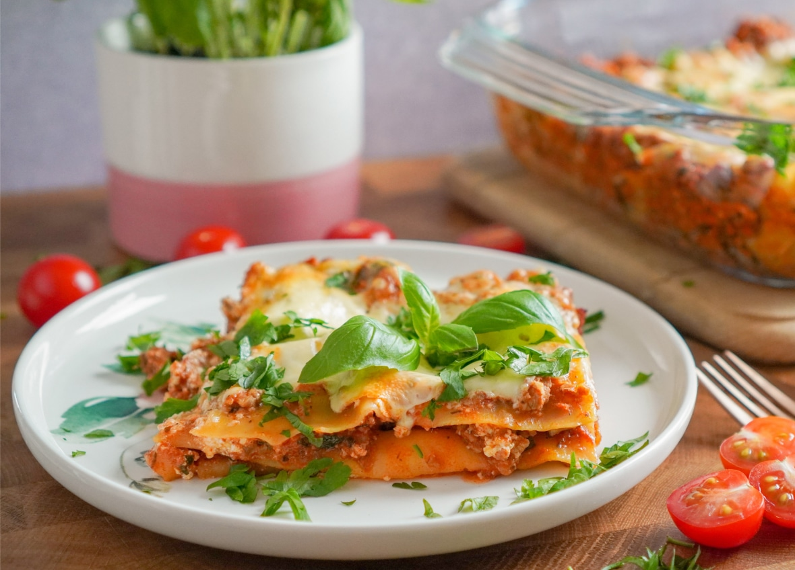

- 50 минут
- 4 персоны
- 10 ингредиентов
Лазанья
Вид итальянской пасты, представляющий из себя пласты теста их твёрдых сортов пшеницы, которые прослаивают разнообразной начинкой и запекают. Лазанья — это традиционное блюдо итальянской кухни, и существует множество вариантов его приготовления. Сегодня мы будем готовить лазанью с мясным фаршем и соусом Бешамель.

Ингредиенты
Лазанья
- Фарш (говядина + свинина)1 кг
- Листы лазаньи200 г
- Помидоры500 г
- Морковь150 г
- Лук200 г
- Сыр пармезан250г
- Чеснок2 зубчика
- Сольпо вкусу
Соус Бешамель
- Молоко1 л
- Мука100 г
- Масло сливочное100 г
- Мускатный орех1 чайная ложка
Рецепт
- 1
Обжариваем лук с морковью и чесноком 10 минут и добавляем фарш, тушим все вместе еще 5 минут
- 2
Добавляем в фарш томаты и тушим еще 15 минут
- 3
Для соуса Бешамель обжариваем муку на сливочном масле и добавляем молоко, тушим 10 минут
- 4
Выкладываем на противень листы лазаньи, сверху фарш с овощами и соус Бешамель, посыпаем сыром и в духовку на 30 минут при 180˚